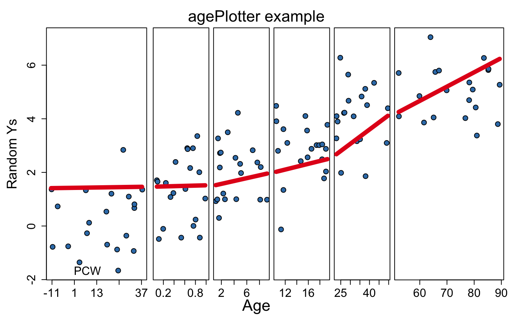
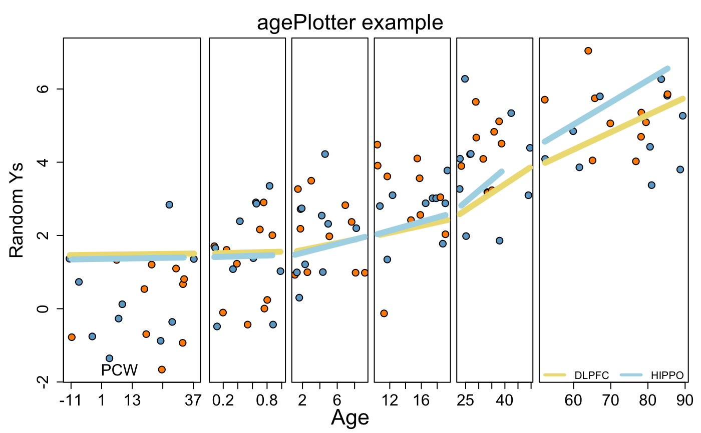

Plots a Y output by age.
agePlotter(y, age, mod = matrix(rep(1, length(y)), ncol = 1), mainText, smoothIt = TRUE, jitter = TRUE, ageLabel = "bottom", orderByAge = TRUE, ylim = NULL, ageBreaks = c(-1, 0, 1, 10, 100), ylab = "Adjusted Expression", pointColor = 2, lineColor = 1, alreadyFitted = NULL, ...)
| y | A vector with the Y outcome. |
|---|---|
| age | A vector with the age information. |
| mod | A model matrix. |
| mainText | A character vector with the main title. |
| smoothIt | A logical indicating whether to smooth Y. |
| jitter | A logical indicating whether to add jitter on the X axis. |
| ageLabel | The location of the age legend. |
| orderByAge | A logical indicating whether to sort the observations by age. |
| ylim | A length two vector with the Y axis limits. |
| ageBreaks | The age cutoffs for the different groups. |
| ylab | The Y axis label. |
| pointColor | An integer indicating the palette color to use for the points. |
| lineColor | An integer indicating the paletter color to use for the lines. |
| alreadyFitted | The output of fitted on a linear model
if you already calculated it. If so, |
| ... | Additional parameters to pass to plot. |
A nice plot =)
pointColor can be a vector of length equal to age and have
multiple values in which case lineColor has to have a length
equal to the number of unique pointColor values. Specifying
this will draw a line for each unique pointColor.
def.par <- par(no.readonly = TRUE) # save default, for resetting... ## Generate some Ys set.seed(20190827) y <- as.vector(vapply(0:5, function(x) rnorm(20, mean = x), numeric(20))) ## Generate some ages age <- as.vector( mapply(runif, c(-1, 0, 1, 10, 20, 50), c(0, 1, 10, 20, 50, 90), n = 20 ) ) ## Make the age plot with a regression line across age vs Y agePlotter(y, age, mainText = "agePlotter example", ylab = "Random Ys", mod = model.matrix(~ age), ageBreaks = c(-1, 0, 1, 10, 20, 50, 100) )## Define line and point colors p_cols <- rep(rep(c('skyblue3', 'dark orange'), each = 10), 6) l_cols <- c('lightgoldenrod', 'light blue') ## Make the plot with the above colors agePlotter(y, age, mainText = "agePlotter example", ylab = "Random Ys", mod = model.matrix(~ age), ageBreaks = c(-1, 0, 1, 10, 20, 50, 100), pointColor = p_cols, lineColor = l_cols )